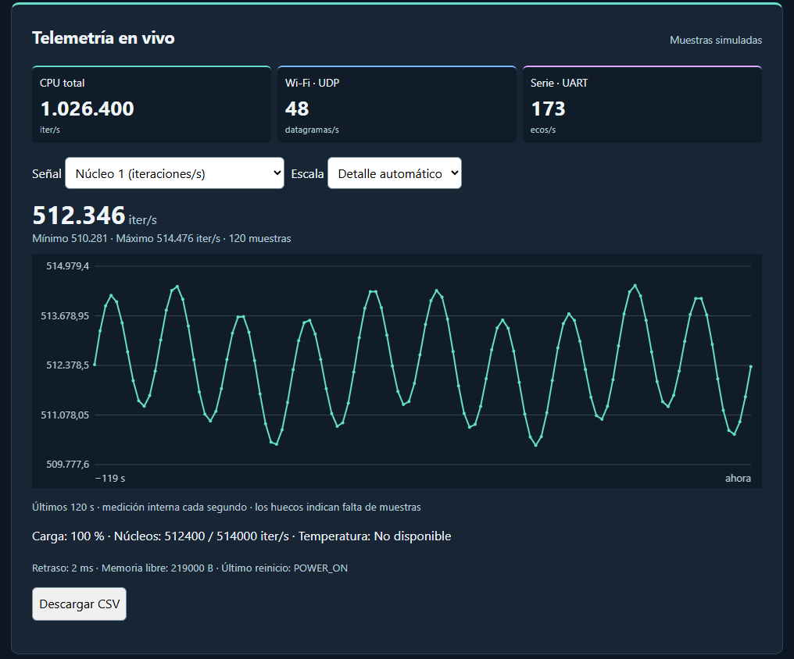

Manual de pruebas de alimentación · ESP32 Stress Lab
ESP32 Stress Lab · Manual de laboratorio1 / 5
Cómo evaluar un convertidor con un ESP32
Alimenta la misma placa primero con una fuente conocida y después con tu convertidor. El ESP32 repetirá el mismo trabajo. La pregunta que responde el ensayo es concreta: ¿sigue funcionando esta placa cuando cambia la demanda y cuando la carga se mantiene?
Qué cambia al exigirle más a la placa
La tensión, en voltios (V), se mantiene cerca de un valor objetivo. La corriente, en amperios (A), varía según lo que pide la placa. Al aumentar la actividad de CPU o de radio puede aumentar esa demanda. Durante el cambio, los condensadores y el control del convertidor sostienen la salida. Una respuesta lenta, una entrada débil o un cable con demasiada resistencia pueden hacer que la tensión caiga en la placa.
Ejemplo conceptual sin escala. La curva inferior ilustra una posible caída y recuperación. El portal solo registra el comportamiento interno del chip.
Un step-down reduce la tensión de entrada. Un step-up la eleva. Para una potencia de salida similar, un step-up alimentado con menor tensión puede exigir más corriente a la batería. Por eso importa anotar también qué alimenta al convertidor. Texas Instruments · Respuesta a cambios de carga.
Alcance. El firmware deja libres los GPIO. El porcentaje de CPU, las tramas y los reinicios sirven para evaluar estabilidad funcional. Los amperios, el rizado en milivoltios y la duración eléctrica de una caída requieren instrumentos externos.
Preparación y primera prueba2 / 5De la placa al primer informe
- Identifica la placa y su entrada de alimentación. Consulta el modelo y el esquema del fabricante. Comprueba que la salida ajustada del convertidor y la polaridad corresponden a esa entrada antes de conectar. Los pines marcados 3V3, VIN o 5V pueden tener funciones distintas según la placa.
- Carga el programa por USB. Abre
ESP32_Power_Stress_Test__1.ino en Arduino IDE. Conserva a su lado portal.h, report.h y serial_load.h. En el gestor de placas instala esp32 by Espressif Systems y en el de bibliotecas, WebSockets de Markus Sattler. Selecciona la placa y el puerto; pulsa Subir.
- Prepara la alimentación de referencia. Con la alimentación desconectada, monta la fuente conocida siguiendo el esquema de tu placa. Para ensayar el convertidor, evita que el USB alimente la placa simultáneamente: puede sostener la tensión y ocultar el problema. El panel funciona por Wi-Fi.
- Abre el panel. En el teléfono o computador elige la red abierta ESP32-Power-Test. Mantén la conexión aunque indique «sin internet». En el navegador escribe http://192.168.4.1/. Debes ver el título ESP32 Stress Lab.
- Haz una prueba corta. Pulsa 1 min, deja Constante, 100 %, todos los núcleos y Generar tráfico Wi-Fi activado. Deja UART desmarcada en esta primera pasada. Pulsa INICIAR PRUEBA. El estado pasa a En curso y aparecen muestras bajo los controles.
- Guarda el resultado. Tras un minuto, busca Finalizada en el informe y pulsa Descargar informe de estabilidad. Si pulsas DETENER antes, obtendrás un resultado parcial. Una prueba nueva reemplaza el resumen anterior.
Si prefieres usar tu router
Desde el punto de acceso abre Conexión al panel. Introduce el nombre y la clave de tu red personal de 2,4 GHz y pulsa Conectar a la red local. El recuadro verde muestra el nombre confirmado y la IP. Conecta el teléfono a ese mismo router y abre la IP indicada. El AP sigue disponible. Configura el router en un entorno de confianza: el formulario se transmite por HTTP sobre un AP abierto.
Si la página no abre: confirma que sigues en la red de la placa y que escribiste http://. Para verificar la dirección durante la instalación por USB, abre el monitor serie a 115200 baudios y reinicia.
Compara dos alimentaciones
Llama A a la fuente conocida y B al montaje con el convertidor. Una referencia útil usa la misma placa, firmware, punto de alimentación, cable de salida, cliente Wi-Fi y ajustes. Si el objetivo es probar un conector, conserva la fuente y cambia solo ese conector.
1. Elige el patrón según el fallo que buscas
| Patrón | Cuándo usarlo |
|---|
| Constante | 10 min al 100 % para empezar. Busca fallos que aparecen tras varios minutos de trabajo continuo. |
| Pulsante | Un período de 5 s alterna 2,5 s de carga y 2,5 s de reposo de CPU. Busca problemas al cambiar la demanda. |
| Rampa | La carga solicitada sube gradualmente y vuelve a cero. Observa si el síntoma reaparece en una zona del ciclo. |
| Benchmark de alimentación | Combina reposo, pulsos y carga sostenida. Es una primera comparación amplia si todavía desconoces la condición del fallo. |
Duración programada de las fases de CPU. Si activas el tráfico Wi-Fi de estrés, los envíos continúan durante las tres fases, incluido el reposo de CPU.
2. Guarda una referencia y repite
Con A, elige Benchmark de alimentación, 30 min y 100 %. Anota las casillas UDP y UART. Completa el ensayo, descarga el TXT y pulsa Guardar ensayo terminado como referencia. Apaga la placa, cambia a B y repite exactamente la configuración. El nuevo informe mostrará la comparación compatible. Vuelve a A y repite si aparece un fallo para comprobar si es reproducible.
3. Lleva una ficha por pasada
Registra fecha, placa, fuente de entrada o batería, convertidor, ajuste de salida, cable, forma de alimentación, duración, período, núcleos, UDP y UART. Distingue un valor nominal de uno medido. Guarda el TXT como A_referencia_30min.txt o B_convertidor_30min.txt. Para comparar convertidores, procura que la batería y la temperatura inicial sean similares.
Lee las curvas y localiza el fallo

Captura del portal con muestras simuladas. Elige una señal en el desplegable.
CPU total suma las iteraciones de los núcleos por segundo. Wi-Fi · UDP cuenta datagramas aceptados para envío por la placa. Serie · UART cuenta ecos comprobados byte a byte dentro del chip. Un cero es esperable cuando esa carga está desactivada. La recepción del UDP por otro equipo queda sin verificar.
Detalle automático amplía el intervalo visible: mira mínimo, máximo y unidad antes de juzgar una oscilación. Desde cero permite apreciar su tamaño relativo. El gráfico muestra hasta 120 s. Cada muestra corresponde aproximadamente a un segundo; la pantalla puede actualizar el estado con más frecuencia.
Si ves un hueco, comprueba si el informe sigue sumando muestras. Si la UART sola funciona y con UDP aparecen huecos, mantén fija la fuente y repite tres pasadas: UART sola, UDP solo y ambos. Desactivar el estrés UDP permite seguir usando el panel por Wi-Fi. Compara fallos de envío, ecos incorrectos y retrasos del bucle.
TXT o CSV. El TXT resume el ensayo en la placa aunque cierres el navegador. El CSV guarda hasta 3600 muestras recibidas por la pestaña: descárgalo antes de cerrarla. Para comparar dos TXT sin conectar la placa, abre CONTROL.html y selecciona ambos en Comparar informes guardados.
Interpretación de resultados5 / 5Qué conclusión puedes sacar
En dos informes de este proyecto, el ESP32 completó 1 y 10 minutos con carga constante al 100 %, dos núcleos y tráfico Wi-Fi activado. Los archivos identifican la duración y los ajustes. La fuente utilizada en cada pasada quedó sin documentar.
Datos de los TXT de 1 y 10 minutos. Cada barra representa un máximo de su ensayo. Los archivos conservan estadísticas agregadas.
Un retraso de 27 ms significa que el bucle tomó dos muestras con 1027 ms de separación, frente a los 1000 ms previstos. En la prueba corta hubo 59 muestras y en la larga, 598. Ninguna llegó al umbral orientativo de 100 ms de exceso. El rendimiento medio fue 1.024.829 y 1.026.858 iter/s, respectivamente (diferencia aproximada del 0,20 %). El ensayo más largo tuvo más oportunidades de registrar un pico.
| Observación | Cómo interpretarla y verificarla |
|---|
| Finaliza y repite resultados similares | La placa sostuvo esa combinación de cargas durante el intervalo probado. Documenta la duración y repite con la otra fuente. |
| Solo aumenta el retraso | El bucle tardó más en atender el muestreo. Repite con los mismos clientes Wi-Fi y revisa la frecuencia de los retrasos. La latencia de ida y vuelta del navegador es otra métrica. |
| Reinicio BROWNOUT | El detector interno registró baja tensión. Revisa también batería, contactos, cable y regulador de la placa. Un POWER_ON puede seguir a un corte completo o a un reinicio de alimentación manual. Espressif · Brownout. |
Si necesitas cifras eléctricas
Un multímetro en paralelo con la alimentación de la placa ayuda a comprobar la tensión continua. Para capturar una caída breve o el rizado, observa la tensión en ese punto con un osciloscopio durante los pulsos. Para corriente media utiliza un medidor adecuado en serie; para picos, una sonda de corriente o una resistencia de medida con instrumentación apropiada. Anota si mides la entrada o la salida del convertidor: sus corrientes pueden ser distintas. Evita poner un amperímetro directamente entre alimentación y masa.